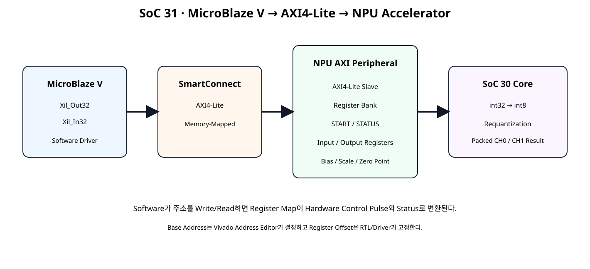
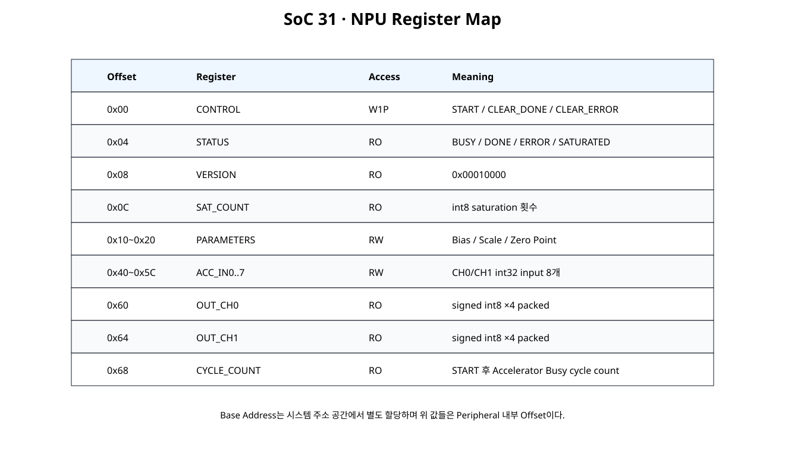
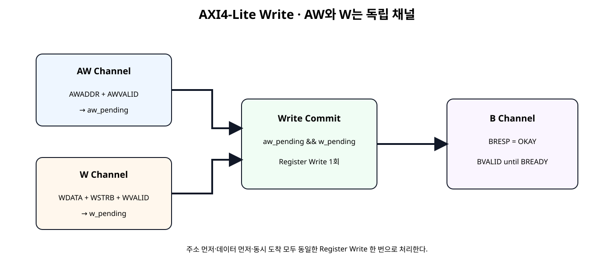
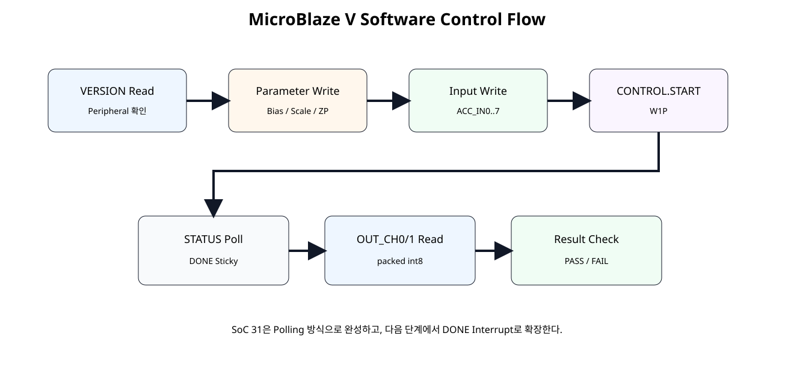

전체 학습 위치
이번 장의 목표

원본 보기 ↗
NPU를 Peripheral로 본다
MicroBlaze V 입장에서는 NPU 내부의 Multiplier, Pipeline, Requantization 구조를 직접 알 필요가 없다. Processor는 주소가 할당된 Register만 읽고 쓴다.
전체 Architecture
원본 보기 ↗
Register Map이 필요한 이유
Register Map은 Software와 Hardware가 공유하는 고정 계약이다. Offset, Bit 의미, Read/Write 속성이 한번 정해지면 RTL과 C Driver가 같은 정의를 사용해야 한다.
Register Map 전체

원본 보기 ↗
| Offset | Register | Access | 역할 |
|---|---|---|---|
| 0x00 | CONTROL | W1P | START / CLEAR_DONE / CLEAR_ERROR |
| 0x04 | STATUS | RO | BUSY / DONE / ERROR / SATURATED |
| 0x08 | VERSION | RO | 0x00010000 |
| 0x0C | SAT_COUNT | RO | Saturation 횟수 |
| 0x10~0x20 | PARAMETERS | RW | Bias / Multiplier / Shift / Zero Point |
| 0x40~0x5C | ACC_IN0..7 | RW | int32 Input 8개 |
| 0x60 | OUT_CH0 | RO | int8 ×4 Packed |
| 0x64 | OUT_CH1 | RO | int8 ×4 Packed |
| 0x68 | CYCLE_COUNT | RO | Operation Cycle Count |
CONTROL
이런 Register를 여기서는 W1P(Write-One-Pulse, 1을 쓰면 Pulse 발생)로 사용한다. Register 값 자체를 계속 1로 보관하지 않는다.
STATUS Sticky Bit
DONE을 1 Clock Pulse만 제공하면 Software Polling이 놓칠 수 있으므로 Register Interface에서는 Sticky 상태로 변환한다.
VERSION
VERSION = 0x00010000을 두어 Software가 예상하는 Peripheral Revision인지 먼저 확인한다. 이후 Register Map이 변경되면 Version 관리가 가능하다.
Parameter Registers
Input / Output Registers
SoC 31에서는 SoC 29의 8개 int32 결과를 Register Buffer로 입력한다. 이는 AXI Register Control을 집중적으로 배우기 위한 작은 Input Buffer다.
Base Address와 Offset
Register Offset은 RTL에서 고정하지만 Base Address는 Vivado Address Editor가 시스템 주소 공간에 할당한다.
xparameters.h의 실제 Symbol을 사용한다.AXI4-Lite 5개 채널
| Channel | 핵심 신호 | 역할 |
|---|---|---|
| AW | AWADDR / AWVALID / AWREADY | Write Address |
| W | WDATA / WSTRB / WVALID / WREADY | Write Data |
| B | BRESP / BVALID / BREADY | Write Response |
| AR | ARADDR / ARVALID / ARREADY | Read Address |
| R | RDATA / RRESP / RVALID / RREADY | Read Data |
AW / W 독립성

원본 보기 ↗
Write Commit
W handshake → w_pending
aw_pending && w_pending → Register Write 1회 → BVALID
따라서 AW가 먼저 오거나 W가 먼저 와도 동일하게 동작한다.
WSTRB
WSTRB[0]은 WDATA[7:0], WSTRB[1]은 WDATA[15:8]처럼 각 Byte Lane의 유효 여부를 나타낸다. RW Register는 apply_wstrb32()로 Byte Partial Write를 지원한다.
Read Channel
SoC 31은 Side Effect가 없는 Register Read를 사용하고 한 번에 한 Read Transaction만 Outstanding으로 둔다.
Register Bank RTL
module npu_register_bank (
input wire clk,
input wire resetn,
// Register-write interface from AXI4-Lite shell.
input wire wr_en_i,
input wire [7:0] wr_addr_i,
input wire [31:0] wr_data_i,
input wire [3:0] wr_strb_i,
// Register-read interface from AXI4-Lite shell.
input wire [7:0] rd_addr_i,
output reg [31:0] rd_data_o,
// Optional debug/status outputs.
output wire accel_busy_o,
output wire accel_done_sticky_o,
output wire accel_error_sticky_o,
output wire [7:0] saturation_count_o
);
// ------------------------------------------------------------
// SoC 31 NPU Register Map
// ------------------------------------------------------------
//
// 0x00 CONTROL RW/W1P
// bit 0 START : write 1 -> one-clock start pulse
// bit 1 CLEAR_DONE : write 1 -> clear DONE sticky
// bit 2 CLEAR_ERROR : write 1 -> clear ERROR sticky
//
// 0x04 STATUS RO
// bit 0 BUSY
// bit 1 DONE_STICKY
// bit 2 ERROR_STICKY
// bit 3 SATURATED_ANY
//
// 0x08 VERSION RO = 0x0001_0000
// 0x0C SAT_COUNT RO
//
// 0x10 BIAS_CH0 RW signed int32
// 0x14 BIAS_CH1 RW signed int32
//
// 0x18 SCALE_CH0 RW
// [15:0] signed multiplier
// [21:16] unsigned right shift
//
// 0x1C SCALE_CH1 RW
// [15:0] signed multiplier
// [21:16] unsigned right shift
//
// 0x20 ZERO_POINT RW
// [15:0] signed zp_ch0
// [31:16] signed zp_ch1
//
// 0x40..0x5C ACC_IN[0..7] RW signed int32
// 0..3 -> CH0 sample0..3
// 4..7 -> CH1 sample0..3
//
// 0x60 OUT_CH0 RO four packed signed int8 values
// 0x64 OUT_CH1 RO four packed signed int8 values
// 0x68 CYCLE_COUNT RO cycles from accepted START to accelerator DONE
//
// START while BUSY is rejected and sets ERROR_STICKY.
//
// Register bank and accelerator share one clock domain in SoC 31.
localparam [31:0] VERSION_VALUE = 32'h0001_0000;
// ------------------------------------------------------------
// Byte-write helper.
// ------------------------------------------------------------
function [31:0] apply_wstrb32;
input [31:0] old_value;
input [31:0] new_value;
input [3:0] strb;
integer byte_index;
begin
apply_wstrb32 = old_value;
for (
byte_index = 0;
byte_index < 4;
byte_index = byte_index + 1
) begin
if (strb[byte_index]) begin
apply_wstrb32[
(byte_index * 8) +: 8
] =
new_value[
(byte_index * 8) +: 8
];
end
end
end
endfunction
// ------------------------------------------------------------
// Software-visible configuration registers.
// ------------------------------------------------------------
reg signed [31:0] bias_ch0_q;
reg signed [31:0] bias_ch1_q;
reg signed [15:0] mult_ch0_q;
reg signed [15:0] mult_ch1_q;
reg [5:0] shift_ch0_q;
reg [5:0] shift_ch1_q;
reg signed [15:0] zp_ch0_q;
reg signed [15:0] zp_ch1_q;
reg signed [31:0] acc_in_q [0:7];
// ------------------------------------------------------------
// Accelerator control/status.
// ------------------------------------------------------------
reg start_pulse_q;
reg done_sticky_q;
reg error_sticky_q;
wire accel_busy_w;
wire accel_done_w;
wire accel_result_valid_w;
wire [31:0] q_ch0_batch_w;
wire [31:0] q_ch1_batch_w;
wire [7:0] saturation_count_w;
reg [31:0] cycle_count_q;
wire control_write_w;
assign control_write_w =
wr_en_i &&
(wr_addr_i[7:2] == 6'h00);
wire start_request_w;
assign start_request_w =
control_write_w &&
wr_strb_i[0] &&
wr_data_i[0];
wire clear_done_request_w;
assign clear_done_request_w =
control_write_w &&
wr_strb_i[0] &&
wr_data_i[1];
wire clear_error_request_w;
assign clear_error_request_w =
control_write_w &&
wr_strb_i[0] &&
wr_data_i[2];
assign accel_busy_o =
accel_busy_w;
assign accel_done_sticky_o =
done_sticky_q;
assign accel_error_sticky_o =
error_sticky_q;
assign saturation_count_o =
saturation_count_w;
// ------------------------------------------------------------
// Requantization accelerator from SoC 30.
// ------------------------------------------------------------
wire [127:0] acc_ch0_batch_w;
wire [127:0] acc_ch1_batch_w;
assign acc_ch0_batch_w = {
acc_in_q[3],
acc_in_q[2],
acc_in_q[1],
acc_in_q[0]
};
assign acc_ch1_batch_w = {
acc_in_q[7],
acc_in_q[6],
acc_in_q[5],
acc_in_q[4]
};
requantize_batch2x4_serial u_accelerator (
.clk(clk),
.resetn(resetn),
.start_i(start_pulse_q),
.acc_ch0_batch_i(acc_ch0_batch_w),
.acc_ch1_batch_i(acc_ch1_batch_w),
.bias_ch0_i(bias_ch0_q),
.bias_ch1_i(bias_ch1_q),
.mult_ch0_i(mult_ch0_q),
.mult_ch1_i(mult_ch1_q),
.shift_ch0_i(shift_ch0_q),
.shift_ch1_i(shift_ch1_q),
.zp_ch0_i(zp_ch0_q),
.zp_ch1_i(zp_ch1_q),
.busy_o(accel_busy_w),
.done_o(accel_done_w),
.result_valid_o(accel_result_valid_w),
.q_ch0_batch_o(q_ch0_batch_w),
.q_ch1_batch_o(q_ch1_batch_w),
.saturation_count_o(saturation_count_w)
);
// ------------------------------------------------------------
// Register write/control process.
// ------------------------------------------------------------
integer i;
reg [31:0] merged_w;
always @(posedge clk) begin
if (!resetn) begin
bias_ch0_q <= 32'sd0;
bias_ch1_q <= 32'sd0;
mult_ch0_q <= 16'sd1;
mult_ch1_q <= 16'sd1;
shift_ch0_q <= 6'd0;
shift_ch1_q <= 6'd0;
zp_ch0_q <= 16'sd0;
zp_ch1_q <= 16'sd0;
for (i = 0; i < 8; i = i + 1) begin
acc_in_q[i] <= 32'sd0;
end
start_pulse_q <= 1'b0;
done_sticky_q <= 1'b0;
error_sticky_q <= 1'b0;
cycle_count_q <= 32'd0;
end else begin
// W1P behavior: pulse returns low automatically.
start_pulse_q <= 1'b0;
// Sticky status clear requests.
if (clear_done_request_w) begin
done_sticky_q <= 1'b0;
end
if (clear_error_request_w) begin
error_sticky_q <= 1'b0;
end
// Accelerator completion wins after clear in the same clock.
if (accel_done_w) begin
done_sticky_q <= 1'b1;
end
// START:
// - accepted only while idle
// - clears previous DONE
// - START while BUSY becomes sticky error
if (start_request_w) begin
if (accel_busy_w) begin
error_sticky_q <= 1'b1;
end else begin
start_pulse_q <= 1'b1;
done_sticky_q <= 1'b0;
cycle_count_q <= 32'd0;
end
end
if (accel_busy_w) begin
cycle_count_q <= cycle_count_q + 32'd1;
end
// Configuration/input writes.
if (wr_en_i) begin
case (wr_addr_i[7:2])
6'h04: begin
merged_w = apply_wstrb32(
bias_ch0_q,
wr_data_i,
wr_strb_i
);
bias_ch0_q <= $signed(merged_w);
end
6'h05: begin
merged_w = apply_wstrb32(
bias_ch1_q,
wr_data_i,
wr_strb_i
);
bias_ch1_q <= $signed(merged_w);
end
6'h06: begin
merged_w = apply_wstrb32(
{
10'd0,
shift_ch0_q,
mult_ch0_q
},
wr_data_i,
wr_strb_i
);
mult_ch0_q <=
$signed(merged_w[15:0]);
shift_ch0_q <=
merged_w[21:16];
end
6'h07: begin
merged_w = apply_wstrb32(
{
10'd0,
shift_ch1_q,
mult_ch1_q
},
wr_data_i,
wr_strb_i
);
mult_ch1_q <=
$signed(merged_w[15:0]);
shift_ch1_q <=
merged_w[21:16];
end
6'h08: begin
merged_w = apply_wstrb32(
{
zp_ch1_q,
zp_ch0_q
},
wr_data_i,
wr_strb_i
);
zp_ch0_q <=
$signed(merged_w[15:0]);
zp_ch1_q <=
$signed(merged_w[31:16]);
end
6'h10: begin
merged_w = apply_wstrb32(
acc_in_q[0],
wr_data_i,
wr_strb_i
);
acc_in_q[0] <= $signed(merged_w);
end
6'h11: begin
merged_w = apply_wstrb32(
acc_in_q[1],
wr_data_i,
wr_strb_i
);
acc_in_q[1] <= $signed(merged_w);
end
6'h12: begin
merged_w = apply_wstrb32(
acc_in_q[2],
wr_data_i,
wr_strb_i
);
acc_in_q[2] <= $signed(merged_w);
end
6'h13: begin
merged_w = apply_wstrb32(
acc_in_q[3],
wr_data_i,
wr_strb_i
);
acc_in_q[3] <= $signed(merged_w);
end
6'h14: begin
merged_w = apply_wstrb32(
acc_in_q[4],
wr_data_i,
wr_strb_i
);
acc_in_q[4] <= $signed(merged_w);
end
6'h15: begin
merged_w = apply_wstrb32(
acc_in_q[5],
wr_data_i,
wr_strb_i
);
acc_in_q[5] <= $signed(merged_w);
end
6'h16: begin
merged_w = apply_wstrb32(
acc_in_q[6],
wr_data_i,
wr_strb_i
);
acc_in_q[6] <= $signed(merged_w);
end
6'h17: begin
merged_w = apply_wstrb32(
acc_in_q[7],
wr_data_i,
wr_strb_i
);
acc_in_q[7] <= $signed(merged_w);
end
default: begin
end
endcase
end
end
end
// ------------------------------------------------------------
// Register read mux.
// ------------------------------------------------------------
always @(*) begin
case (rd_addr_i[7:2])
6'h00: rd_data_o = 32'h0000_0000;
6'h01: rd_data_o = {
28'd0,
(saturation_count_w != 8'd0),
error_sticky_q,
done_sticky_q,
accel_busy_w
};
6'h02: rd_data_o = VERSION_VALUE;
6'h03: rd_data_o = {
24'd0,
saturation_count_w
};
6'h04: rd_data_o = bias_ch0_q;
6'h05: rd_data_o = bias_ch1_q;
6'h06: rd_data_o = {
10'd0,
shift_ch0_q,
mult_ch0_q
};
6'h07: rd_data_o = {
10'd0,
shift_ch1_q,
mult_ch1_q
};
6'h08: rd_data_o = {
zp_ch1_q,
zp_ch0_q
};
6'h10: rd_data_o = acc_in_q[0];
6'h11: rd_data_o = acc_in_q[1];
6'h12: rd_data_o = acc_in_q[2];
6'h13: rd_data_o = acc_in_q[3];
6'h14: rd_data_o = acc_in_q[4];
6'h15: rd_data_o = acc_in_q[5];
6'h16: rd_data_o = acc_in_q[6];
6'h17: rd_data_o = acc_in_q[7];
6'h18: rd_data_o = q_ch0_batch_w;
6'h19: rd_data_o = q_ch1_batch_w;
6'h1A: rd_data_o = cycle_count_q;
default: rd_data_o = 32'h0000_0000;
endcase
end
endmodule
AXI4-Lite Slave RTL
module npu_axi4lite_slave #(
parameter integer C_S_AXI_ADDR_WIDTH = 8,
parameter integer C_S_AXI_DATA_WIDTH = 32
) (
input wire s_axi_aclk,
input wire s_axi_aresetn,
input wire [C_S_AXI_ADDR_WIDTH-1:0] s_axi_awaddr,
input wire s_axi_awvalid,
output wire s_axi_awready,
input wire [C_S_AXI_DATA_WIDTH-1:0] s_axi_wdata,
input wire [(C_S_AXI_DATA_WIDTH/8)-1:0] s_axi_wstrb,
input wire s_axi_wvalid,
output wire s_axi_wready,
output wire [1:0] s_axi_bresp,
output reg s_axi_bvalid,
input wire s_axi_bready,
input wire [C_S_AXI_ADDR_WIDTH-1:0] s_axi_araddr,
input wire s_axi_arvalid,
output wire s_axi_arready,
output reg [C_S_AXI_DATA_WIDTH-1:0] s_axi_rdata,
output wire [1:0] s_axi_rresp,
output reg s_axi_rvalid,
input wire s_axi_rready,
output wire accel_busy_o,
output wire accel_done_sticky_o,
output wire accel_error_sticky_o,
output wire [7:0] saturation_count_o
);
// AXI4-Lite control/status shell.
//
// Important implementation point:
// AXI write-address (AW) and write-data (W) are independent channels.
// The slave therefore captures them independently and commits a register
// write only after both are present.
//
// One write transaction and one read transaction may be outstanding.
// BRESP/RRESP are OKAY in this introductory register peripheral.
reg aw_pending_q;
reg [C_S_AXI_ADDR_WIDTH-1:0] awaddr_q;
reg w_pending_q;
reg [C_S_AXI_DATA_WIDTH-1:0] wdata_q;
reg [(C_S_AXI_DATA_WIDTH/8)-1:0] wstrb_q;
assign s_axi_awready =
!aw_pending_q &&
!s_axi_bvalid;
assign s_axi_wready =
!w_pending_q &&
!s_axi_bvalid;
assign s_axi_bresp =
2'b00;
wire aw_handshake_w;
wire w_handshake_w;
assign aw_handshake_w =
s_axi_awvalid &&
s_axi_awready;
assign w_handshake_w =
s_axi_wvalid &&
s_axi_wready;
wire register_write_fire_w;
assign register_write_fire_w =
aw_pending_q &&
w_pending_q &&
!s_axi_bvalid;
reg register_wr_en_q;
wire [31:0] register_rd_data_w;
npu_register_bank u_register_bank (
.clk(s_axi_aclk),
.resetn(s_axi_aresetn),
.wr_en_i(register_wr_en_q),
.wr_addr_i(awaddr_q[7:0]),
.wr_data_i(wdata_q),
.wr_strb_i(wstrb_q),
.rd_addr_i(s_axi_araddr[7:0]),
.rd_data_o(register_rd_data_w),
.accel_busy_o(accel_busy_o),
.accel_done_sticky_o(accel_done_sticky_o),
.accel_error_sticky_o(accel_error_sticky_o),
.saturation_count_o(saturation_count_o)
);
// ------------------------------------------------------------
// Write channels.
// ------------------------------------------------------------
always @(posedge s_axi_aclk) begin
if (!s_axi_aresetn) begin
aw_pending_q <= 1'b0;
awaddr_q <= {C_S_AXI_ADDR_WIDTH{1'b0}};
w_pending_q <= 1'b0;
wdata_q <= {C_S_AXI_DATA_WIDTH{1'b0}};
wstrb_q <= {(C_S_AXI_DATA_WIDTH/8){1'b0}};
register_wr_en_q<= 1'b0;
s_axi_bvalid <= 1'b0;
end else begin
register_wr_en_q <= 1'b0;
if (aw_handshake_w) begin
aw_pending_q <= 1'b1;
awaddr_q <= s_axi_awaddr;
end
if (w_handshake_w) begin
w_pending_q <= 1'b1;
wdata_q <= s_axi_wdata;
wstrb_q <= s_axi_wstrb;
end
if (register_write_fire_w) begin
register_wr_en_q <= 1'b1;
aw_pending_q <= 1'b0;
w_pending_q <= 1'b0;
s_axi_bvalid <= 1'b1;
end
if (
s_axi_bvalid &&
s_axi_bready
) begin
s_axi_bvalid <= 1'b0;
end
end
end
// ------------------------------------------------------------
// Read channel.
// ------------------------------------------------------------
assign s_axi_arready =
!s_axi_rvalid;
assign s_axi_rresp =
2'b00;
wire ar_handshake_w;
assign ar_handshake_w =
s_axi_arvalid &&
s_axi_arready;
always @(posedge s_axi_aclk) begin
if (!s_axi_aresetn) begin
s_axi_rdata <= {C_S_AXI_DATA_WIDTH{1'b0}};
s_axi_rvalid <= 1'b0;
end else begin
if (ar_handshake_w) begin
s_axi_rdata <= register_rd_data_w;
s_axi_rvalid <= 1'b1;
end
if (
s_axi_rvalid &&
s_axi_rready
) begin
s_axi_rvalid <= 1'b0;
end
end
end
endmodule
Module Reference Top
module npu_axi_accel_ip (
(* X_INTERFACE_INFO = "xilinx.com:signal:clock:1.0 s_axi_aclk CLK" *)
(* X_INTERFACE_PARAMETER = "XIL_INTERFACENAME s_axi_aclk, ASSOCIATED_BUSIF S_AXI, ASSOCIATED_RESET s_axi_aresetn" *)
input wire s_axi_aclk,
(* X_INTERFACE_INFO = "xilinx.com:signal:reset:1.0 s_axi_aresetn RST" *)
(* X_INTERFACE_PARAMETER = "XIL_INTERFACENAME s_axi_aresetn, POLARITY ACTIVE_LOW" *)
input wire s_axi_aresetn,
(* X_INTERFACE_INFO = "xilinx.com:interface:aximm:1.0 S_AXI AWADDR" *)
input wire [7:0] s_axi_awaddr,
(* X_INTERFACE_INFO = "xilinx.com:interface:aximm:1.0 S_AXI AWVALID" *)
input wire s_axi_awvalid,
(* X_INTERFACE_INFO = "xilinx.com:interface:aximm:1.0 S_AXI AWREADY" *)
output wire s_axi_awready,
(* X_INTERFACE_INFO = "xilinx.com:interface:aximm:1.0 S_AXI WDATA" *)
input wire [31:0] s_axi_wdata,
(* X_INTERFACE_INFO = "xilinx.com:interface:aximm:1.0 S_AXI WSTRB" *)
input wire [3:0] s_axi_wstrb,
(* X_INTERFACE_INFO = "xilinx.com:interface:aximm:1.0 S_AXI WVALID" *)
input wire s_axi_wvalid,
(* X_INTERFACE_INFO = "xilinx.com:interface:aximm:1.0 S_AXI WREADY" *)
output wire s_axi_wready,
(* X_INTERFACE_INFO = "xilinx.com:interface:aximm:1.0 S_AXI BRESP" *)
output wire [1:0] s_axi_bresp,
(* X_INTERFACE_INFO = "xilinx.com:interface:aximm:1.0 S_AXI BVALID" *)
output wire s_axi_bvalid,
(* X_INTERFACE_INFO = "xilinx.com:interface:aximm:1.0 S_AXI BREADY" *)
input wire s_axi_bready,
(* X_INTERFACE_INFO = "xilinx.com:interface:aximm:1.0 S_AXI ARADDR" *)
input wire [7:0] s_axi_araddr,
(* X_INTERFACE_INFO = "xilinx.com:interface:aximm:1.0 S_AXI ARVALID" *)
input wire s_axi_arvalid,
(* X_INTERFACE_INFO = "xilinx.com:interface:aximm:1.0 S_AXI ARREADY" *)
output wire s_axi_arready,
(* X_INTERFACE_INFO = "xilinx.com:interface:aximm:1.0 S_AXI RDATA" *)
output wire [31:0] s_axi_rdata,
(* X_INTERFACE_INFO = "xilinx.com:interface:aximm:1.0 S_AXI RRESP" *)
output wire [1:0] s_axi_rresp,
(* X_INTERFACE_INFO = "xilinx.com:interface:aximm:1.0 S_AXI RVALID" *)
output wire s_axi_rvalid,
(* X_INTERFACE_INFO = "xilinx.com:interface:aximm:1.0 S_AXI RREADY" *)
input wire s_axi_rready
);
// Pure AXI Shell / Wrapper.
//
// Vivado can use this RTL as a Module Reference in Block Design.
// The functional register and accelerator logic remains in submodules.
wire accel_busy;
wire accel_done_sticky;
wire accel_error_sticky;
wire [7:0] saturation_count;
npu_axi4lite_slave u_axi_slave (
.s_axi_aclk(s_axi_aclk),
.s_axi_aresetn(s_axi_aresetn),
.s_axi_awaddr(s_axi_awaddr),
.s_axi_awvalid(s_axi_awvalid),
.s_axi_awready(s_axi_awready),
.s_axi_wdata(s_axi_wdata),
.s_axi_wstrb(s_axi_wstrb),
.s_axi_wvalid(s_axi_wvalid),
.s_axi_wready(s_axi_wready),
.s_axi_bresp(s_axi_bresp),
.s_axi_bvalid(s_axi_bvalid),
.s_axi_bready(s_axi_bready),
.s_axi_araddr(s_axi_araddr),
.s_axi_arvalid(s_axi_arvalid),
.s_axi_arready(s_axi_arready),
.s_axi_rdata(s_axi_rdata),
.s_axi_rresp(s_axi_rresp),
.s_axi_rvalid(s_axi_rvalid),
.s_axi_rready(s_axi_rready),
.accel_busy_o(accel_busy),
.accel_done_sticky_o(accel_done_sticky),
.accel_error_sticky_o(accel_error_sticky),
.saturation_count_o(saturation_count)
);
endmodule
Top은 AXI Port와 하위 Slave 연결만 담당한다. 기능 로직을 Top에 넣지 않는 기존 Shell/Wrapper 원칙을 유지한다.
START Pulse
Software가 CONTROL bit0에 1을 쓰면 Register Bank 내부에서 start_pulse_q를 정확히 한 Clock만 High로 만든다. Software가 Register를 다시 0으로 쓰는 절차는 필요하지 않다.
START while BUSY
Accelerator가 BUSY일 때 다시 START를 쓰면 명령은 무시하고 ERROR_STICKY를 1로 만든다. Software가 잘못된 재시작을 감지할 수 있다.
Cycle Counter
START를 수락할 때 0으로 초기화하고 BUSY 동안 증가한다. 이번 단계에서는 고정 성능 기준값으로 판정하지 않고 Software가 Accelerator Latency를 관찰하는 Status Register로 사용한다.
SoC30 Core 재사용
requantize_s32_to_s8.v와 requantize_batch2x4_serial.v는 SoC 30 파일을 수정 없이 재사용한다. SoC 31의 변경점은 계산 회로가 아니라 제어/주소 경계다.
MicroBlaze V Driver
#ifndef NPU_ACCEL_H
#define NPU_ACCEL_H
#include "xil_io.h"
#include "xil_types.h"
// ------------------------------------------------------------
// SoC 31 NPU AXI4-Lite Register Map
// ------------------------------------------------------------
#define NPU_CONTROL_OFFSET 0x00U
#define NPU_STATUS_OFFSET 0x04U
#define NPU_VERSION_OFFSET 0x08U
#define NPU_SAT_COUNT_OFFSET 0x0CU
#define NPU_BIAS_CH0_OFFSET 0x10U
#define NPU_BIAS_CH1_OFFSET 0x14U
#define NPU_SCALE_CH0_OFFSET 0x18U
#define NPU_SCALE_CH1_OFFSET 0x1CU
#define NPU_ZERO_POINT_OFFSET 0x20U
#define NPU_ACC_IN0_OFFSET 0x40U
#define NPU_ACC_IN1_OFFSET 0x44U
#define NPU_ACC_IN2_OFFSET 0x48U
#define NPU_ACC_IN3_OFFSET 0x4CU
#define NPU_ACC_IN4_OFFSET 0x50U
#define NPU_ACC_IN5_OFFSET 0x54U
#define NPU_ACC_IN6_OFFSET 0x58U
#define NPU_ACC_IN7_OFFSET 0x5CU
#define NPU_OUT_CH0_OFFSET 0x60U
#define NPU_OUT_CH1_OFFSET 0x64U
#define NPU_CYCLE_COUNT_OFFSET 0x68U
#define NPU_CONTROL_START_MASK 0x00000001U
#define NPU_CONTROL_CLEAR_DONE_MASK 0x00000002U
#define NPU_CONTROL_CLEAR_ERROR_MASK 0x00000004U
#define NPU_STATUS_BUSY_MASK 0x00000001U
#define NPU_STATUS_DONE_MASK 0x00000002U
#define NPU_STATUS_ERROR_MASK 0x00000004U
#define NPU_STATUS_SATURATED_MASK 0x00000008U
#define NPU_VERSION_EXPECTED 0x00010000U
static inline void Npu_WriteReg(
UINTPTR BaseAddress,
u32 Offset,
u32 Value
)
{
Xil_Out32(BaseAddress + (UINTPTR)Offset, Value);
}
static inline u32 Npu_ReadReg(
UINTPTR BaseAddress,
u32 Offset
)
{
return Xil_In32(BaseAddress + (UINTPTR)Offset);
}
static inline u32 Npu_PackScale(
s16 Multiplier,
u8 Shift
)
{
return
((u32)Multiplier & 0x0000FFFFU) |
(((u32)Shift & 0x3FU) << 16U);
}
static inline u32 Npu_PackZeroPoint(
s16 ZpCh0,
s16 ZpCh1
)
{
return
((u32)ZpCh0 & 0x0000FFFFU) |
(((u32)ZpCh1 & 0x0000FFFFU) << 16U);
}
static inline void Npu_Start(UINTPTR BaseAddress)
{
Npu_WriteReg(
BaseAddress,
NPU_CONTROL_OFFSET,
NPU_CONTROL_START_MASK
);
}
static inline void Npu_ClearDone(UINTPTR BaseAddress)
{
Npu_WriteReg(
BaseAddress,
NPU_CONTROL_OFFSET,
NPU_CONTROL_CLEAR_DONE_MASK
);
}
static inline void Npu_ClearError(UINTPTR BaseAddress)
{
Npu_WriteReg(
BaseAddress,
NPU_CONTROL_OFFSET,
NPU_CONTROL_CLEAR_ERROR_MASK
);
}
static inline u32 Npu_GetStatus(UINTPTR BaseAddress)
{
return Npu_ReadReg(
BaseAddress,
NPU_STATUS_OFFSET
);
}
static inline int Npu_IsBusy(UINTPTR BaseAddress)
{
return
(Npu_GetStatus(BaseAddress) & NPU_STATUS_BUSY_MASK)
!= 0U;
}
static inline int Npu_IsDone(UINTPTR BaseAddress)
{
return
(Npu_GetStatus(BaseAddress) & NPU_STATUS_DONE_MASK)
!= 0U;
}
#endif
Xil_Out32 / Xil_In32
현재 AMD Embedded Software Driver들도 Base Address + Register Offset 형태로 Xil_Out32(), Xil_In32()를 사용한다. SoC 31 Driver도 동일한 최소 MMIO Pattern을 사용한다.
MicroBlaze V Application
#include "xil_printf.h"
#include "xparameters.h"
#include "npu_accel.h"
// Vivado Address Editor assigns the final base address.
// Classic BSP commonly exports XPAR_NPU_AXI_0_BASEADDR.
//
// If your generated name differs, replace NPU_BASEADDR below
// with the symbol from the generated xparameters.h.
//
// Example:
// #define NPU_BASEADDR XPAR_NPU_AXI_0_BASEADDR
#ifndef NPU_BASEADDR
#ifdef XPAR_NPU_AXI_0_BASEADDR
#define NPU_BASEADDR XPAR_NPU_AXI_0_BASEADDR
#else
#error "Define NPU_BASEADDR using the generated xparameters.h base address."
#endif
#endif
static void npu_write_demo_inputs(UINTPTR base)
{
// SoC 29 board-demo int32 outputs.
// CH0 = [16, 32, 48, 64]
// CH1 = [32, 64, 96, 128]
Npu_WriteReg(base, NPU_ACC_IN0_OFFSET, 16U);
Npu_WriteReg(base, NPU_ACC_IN1_OFFSET, 32U);
Npu_WriteReg(base, NPU_ACC_IN2_OFFSET, 48U);
Npu_WriteReg(base, NPU_ACC_IN3_OFFSET, 64U);
Npu_WriteReg(base, NPU_ACC_IN4_OFFSET, 32U);
Npu_WriteReg(base, NPU_ACC_IN5_OFFSET, 64U);
Npu_WriteReg(base, NPU_ACC_IN6_OFFSET, 96U);
Npu_WriteReg(base, NPU_ACC_IN7_OFFSET, 128U);
}
static void npu_write_demo_parameters(UINTPTR base)
{
// CH0:
// q = round_away_from_zero(x / 2)
Npu_WriteReg(base, NPU_BIAS_CH0_OFFSET, 0U);
Npu_WriteReg(
base,
NPU_SCALE_CH0_OFFSET,
Npu_PackScale(1, 1U)
);
// CH1:
// q = round_away_from_zero((x + 4) * 3 / 2) - 3
Npu_WriteReg(base, NPU_BIAS_CH1_OFFSET, 4U);
Npu_WriteReg(
base,
NPU_SCALE_CH1_OFFSET,
Npu_PackScale(3, 1U)
);
Npu_WriteReg(
base,
NPU_ZERO_POINT_OFFSET,
Npu_PackZeroPoint(0, -3)
);
}
int main(void)
{
const UINTPTR base = (UINTPTR)NPU_BASEADDR;
u32 version;
u32 status;
u32 out_ch0;
u32 out_ch1;
u32 sat_count;
u32 cycle_count;
u32 timeout;
xil_printf("\r\nSoC31 NPU AXI4-Lite demo\r\n");
version = Npu_ReadReg(
base,
NPU_VERSION_OFFSET
);
xil_printf(
"VERSION = 0x%08x\r\n",
(unsigned int)version
);
if (version != NPU_VERSION_EXPECTED) {
xil_printf("ERROR: unexpected NPU version\r\n");
return 1;
}
Npu_ClearDone(base);
Npu_ClearError(base);
npu_write_demo_inputs(base);
npu_write_demo_parameters(base);
Npu_Start(base);
timeout = 1000000U;
status = 0U;
while (
((status & NPU_STATUS_DONE_MASK) == 0U) &&
(timeout != 0U)
) {
status = Npu_GetStatus(base);
timeout--;
}
if (timeout == 0U) {
xil_printf("ERROR: accelerator timeout\r\n");
return 1;
}
if ((status & NPU_STATUS_ERROR_MASK) != 0U) {
xil_printf("ERROR: accelerator status error\r\n");
return 1;
}
out_ch0 = Npu_ReadReg(
base,
NPU_OUT_CH0_OFFSET
);
out_ch1 = Npu_ReadReg(
base,
NPU_OUT_CH1_OFFSET
);
sat_count = Npu_ReadReg(
base,
NPU_SAT_COUNT_OFFSET
);
cycle_count = Npu_ReadReg(
base,
NPU_CYCLE_COUNT_OFFSET
);
xil_printf(
"OUT_CH0 = 0x%08x\r\n",
(unsigned int)out_ch0
);
xil_printf(
"OUT_CH1 = 0x%08x\r\n",
(unsigned int)out_ch1
);
xil_printf(
"SAT_COUNT = %u\r\n",
(unsigned int)sat_count
);
xil_printf(
"CYCLE_COUNT = %u\r\n",
(unsigned int)cycle_count
);
// Expected from SoC 30:
// CH0 [8,16,24,32] -> 0x20181008
// CH1 [51,99,127,127]-> 0x7F7F6333
if (
(out_ch0 != 0x20181008U) ||
(out_ch1 != 0x7F7F6333U) ||
((sat_count & 0xFFU) != 2U)
) {
xil_printf("SOC31 RESULT: FAIL\r\n");
return 1;
}
xil_printf("SOC31 RESULT: PASS\r\n");
return 0;
}
Polling에는 Timeout을 두어 Hardware 연결 오류가 있을 때 무한 Loop에 빠지지 않도록 했다.
Software Control Flow

원본 보기 ↗
Address Editor
Vivado Block Design에서 NPU Slave를 SmartConnect에 연결한 뒤 Address Editor에서 주소 공간을 할당한다. 실제 Base Address Symbol은 Vitis/BSP가 생성한 xparameters.h를 확인한다.
Expected Result
이는 SoC 30에서 검증한 동일 Requantization Demo를 AXI Register 경유로 실행한 결과다.
AXI Self-Checking Test
`timescale 1ns / 1ps
module tb_npu_axi4lite_slave;
logic clk = 1'b0;
logic resetn = 1'b0;
logic [7:0] awaddr = 8'h00;
logic awvalid = 1'b0;
wire awready;
logic [31:0] wdata = 32'h0000_0000;
logic [3:0] wstrb = 4'h0;
logic wvalid = 1'b0;
wire wready;
wire [1:0] bresp;
wire bvalid;
logic bready = 1'b1;
logic [7:0] araddr = 8'h00;
logic arvalid = 1'b0;
wire arready;
wire [31:0] rdata;
wire [1:0] rresp;
wire rvalid;
logic rready = 1'b1;
wire accel_busy;
wire accel_done_sticky;
wire accel_error_sticky;
wire [7:0] saturation_count;
integer error_count = 0;
integer check_count = 0;
always #5 clk = ~clk;
npu_axi4lite_slave dut (
.s_axi_aclk(clk),
.s_axi_aresetn(resetn),
.s_axi_awaddr(awaddr),
.s_axi_awvalid(awvalid),
.s_axi_awready(awready),
.s_axi_wdata(wdata),
.s_axi_wstrb(wstrb),
.s_axi_wvalid(wvalid),
.s_axi_wready(wready),
.s_axi_bresp(bresp),
.s_axi_bvalid(bvalid),
.s_axi_bready(bready),
.s_axi_araddr(araddr),
.s_axi_arvalid(arvalid),
.s_axi_arready(arready),
.s_axi_rdata(rdata),
.s_axi_rresp(rresp),
.s_axi_rvalid(rvalid),
.s_axi_rready(rready),
.accel_busy_o(accel_busy),
.accel_done_sticky_o(accel_done_sticky),
.accel_error_sticky_o(accel_error_sticky),
.saturation_count_o(saturation_count)
);
task automatic check_true(
input string name,
input bit condition
);
begin
check_count = check_count + 1;
if (!condition) begin
error_count = error_count + 1;
$error("CHECK FAIL: %s", name);
end else begin
$display("CHECK PASS: %s", name);
end
end
endtask
task automatic check_eq32(
input string name,
input logic [31:0] actual,
input logic [31:0] expected
);
begin
check_count = check_count + 1;
if (actual !== expected) begin
error_count = error_count + 1;
$error(
"CHECK FAIL: %s actual=0x%08h expected=0x%08h",
name,
actual,
expected
);
end else begin
$display(
"CHECK PASS: %s = 0x%08h",
name,
actual
);
end
end
endtask
// order:
// 0 = AW and W together
// 1 = AW first, W later
// 2 = W first, AW later
task automatic axi_write(
input [7:0] address,
input [31:0] data,
input [3:0] strobe,
input integer order
);
bit aw_done;
bit w_done;
integer timeout;
begin
aw_done = 0;
w_done = 0;
@(negedge clk);
awaddr = address;
wdata = data;
wstrb = strobe;
case (order)
0: begin
awvalid = 1'b1;
wvalid = 1'b1;
end
1: begin
awvalid = 1'b1;
wvalid = 1'b0;
end
default: begin
awvalid = 1'b0;
wvalid = 1'b1;
end
endcase
timeout = 0;
while (!(aw_done && w_done)) begin
@(posedge clk);
// (변경) READY가 갱신되기 전 상승 에지의 handshake를 관측한다.
if (
awvalid &&
awready
) begin
aw_done = 1;
end
if (
wvalid &&
wready
) begin
w_done = 1;
end
@(negedge clk);
if (aw_done) begin
awvalid = 1'b0;
end
if (w_done) begin
wvalid = 1'b0;
end
if ((order == 1) && aw_done && !w_done) begin
wvalid = 1'b1;
end
if ((order == 2) && w_done && !aw_done) begin
awvalid = 1'b1;
end
timeout = timeout + 1;
if (timeout > 30) begin
$fatal(1, "AXI write handshake timeout");
end
end
timeout = 0;
while (!bvalid) begin
@(posedge clk);
#1;
timeout = timeout + 1;
if (timeout > 30) begin
$fatal(1, "AXI BVALID timeout");
end
end
check_true(
"AXI BRESP OKAY",
bresp == 2'b00
);
// Allow response handshake and register-side effect to settle.
@(posedge clk);
#1;
end
endtask
task automatic axi_read(
input [7:0] address,
output [31:0] data
);
integer timeout;
begin
@(negedge clk);
araddr = address;
arvalid = 1'b1;
timeout = 0;
while (!arready) begin
@(posedge clk);
#1;
timeout = timeout + 1;
if (timeout > 30) begin
$fatal(1, "AXI ARREADY timeout");
end
end
@(posedge clk);
#1;
// The read data may be returned immediately after this edge.
if (!rvalid) begin
timeout = 0;
while (!rvalid) begin
@(posedge clk);
#1;
timeout = timeout + 1;
if (timeout > 30) begin
$fatal(1, "AXI RVALID timeout");
end
end
end
data = rdata;
check_true(
"AXI RRESP OKAY",
rresp == 2'b00
);
@(negedge clk);
arvalid = 1'b0;
@(posedge clk);
#1;
end
endtask
task automatic wait_busy;
reg [31:0] status;
integer timeout;
begin
timeout = 0;
status = 32'd0;
while ((status & 32'h1) == 0) begin
axi_read(8'h04, status);
timeout = timeout + 1;
if (timeout > 20) begin
$fatal(1, "BUSY did not assert");
end
end
end
endtask
task automatic wait_done;
reg [31:0] status;
integer timeout;
begin
timeout = 0;
status = 32'd0;
while ((status & 32'h2) == 0) begin
axi_read(8'h04, status);
timeout = timeout + 1;
if (timeout > 50) begin
$fatal(1, "DONE did not assert");
end
end
end
endtask
initial begin
reg [31:0] rd;
repeat (5) @(posedge clk);
resetn = 1'b1;
// --------------------------------------------------------
// 1. Basic RO map.
// --------------------------------------------------------
axi_read(8'h08, rd);
check_eq32(
"VERSION",
rd,
32'h0001_0000
);
// --------------------------------------------------------
// 2. WSTRB partial-write test.
// Full write, then update only byte lane 1.
// --------------------------------------------------------
axi_write(
8'h10,
32'h1122_3344,
4'b1111,
0
);
axi_write(
8'h10,
32'h0000_AA00,
4'b0010,
1
);
axi_read(8'h10, rd);
check_eq32(
"WSTRB partial BIAS_CH0",
rd,
32'h1122_AA44
);
// --------------------------------------------------------
// 3. Demo parameters.
// Exercise simultaneous, AW-first, W-first ordering.
// --------------------------------------------------------
axi_write(8'h10, 32'd0, 4'hF, 0);
axi_write(8'h14, 32'd4, 4'hF, 1);
axi_write(8'h18, 32'h0001_0001, 4'hF, 2);
axi_write(8'h1C, 32'h0001_0003, 4'hF, 0);
axi_write(8'h20, 32'hFFFD_0000, 4'hF, 1);
axi_read(8'h18, rd);
check_eq32("SCALE_CH0", rd, 32'h0001_0001);
axi_read(8'h1C, rd);
check_eq32("SCALE_CH1", rd, 32'h0001_0003);
axi_read(8'h20, rd);
check_eq32("ZERO_POINT", rd, 32'hFFFD_0000);
// --------------------------------------------------------
// 4. SoC29 int32 input registers.
// --------------------------------------------------------
axi_write(8'h40, 32'd16, 4'hF, 0);
axi_write(8'h44, 32'd32, 4'hF, 1);
axi_write(8'h48, 32'd48, 4'hF, 2);
axi_write(8'h4C, 32'd64, 4'hF, 0);
axi_write(8'h50, 32'd32, 4'hF, 1);
axi_write(8'h54, 32'd64, 4'hF, 2);
axi_write(8'h58, 32'd96, 4'hF, 0);
axi_write(8'h5C, 32'd128, 4'hF, 1);
// Clear sticky flags before run.
axi_write(
8'h00,
32'h0000_0006,
4'b0001,
0
);
// --------------------------------------------------------
// 5. START and BUSY.
// --------------------------------------------------------
axi_write(
8'h00,
32'h0000_0001,
4'b0001,
2
);
wait_busy();
check_true(
"debug BUSY output",
accel_busy === 1'b1
);
// START while BUSY must be rejected and set ERROR sticky.
axi_write(
8'h00,
32'h0000_0001,
4'b0001,
0
);
wait_done();
// --------------------------------------------------------
// 6. Status and result.
// --------------------------------------------------------
axi_read(8'h04, rd);
check_true(
"DONE sticky set",
(rd & 32'h2) != 0
);
check_true(
"ERROR sticky set by START while BUSY",
(rd & 32'h4) != 0
);
check_true(
"SATURATED_ANY set",
(rd & 32'h8) != 0
);
axi_read(8'h0C, rd);
check_eq32(
"SAT_COUNT",
rd,
32'd2
);
axi_read(8'h60, rd);
check_eq32(
"OUT_CH0",
rd,
32'h2018_1008
);
axi_read(8'h64, rd);
check_eq32(
"OUT_CH1",
rd,
32'h7F7F_6333
);
axi_read(8'h68, rd);
check_true(
"CYCLE_COUNT non-zero",
rd != 32'd0
);
// --------------------------------------------------------
// 7. Clear sticky flags.
// --------------------------------------------------------
axi_write(
8'h00,
32'h0000_0006,
4'b0001,
1
);
axi_read(8'h04, rd);
check_true(
"DONE sticky cleared",
(rd & 32'h2) == 0
);
check_true(
"ERROR sticky cleared",
(rd & 32'h4) == 0
);
$display("");
$display("SOC31 CHECK COUNT : %0d", check_count);
$display("SOC31 ERROR COUNT : %0d", error_count);
if (error_count == 0) begin
$display("SOC31 AXI4-LITE NPU REGISTER TEST: PASS");
end else begin
$fatal(
1,
"SOC31 AXI4-LITE NPU REGISTER TEST: FAIL (%0d errors)",
error_count
);
end
#20;
$finish;
end
endmodule
Protocol Test Cases
| Test | 목적 |
|---|---|
| AW + W 동시 | 일반 Write |
| AW 먼저 | Write Address/Data 독립성 |
| W 먼저 | 반대 순서 독립성 |
| WSTRB 0010 | Byte Lane Partial Write |
| START | W1P Pulse |
| START while BUSY | Error Sticky |
| CLEAR_DONE/ERROR | Sticky Clear |
| OUT Read | SoC30 결과 유지 |
Python Register Reference
Register map:
CONTROL 0x00
STATUS 0x04
VERSION 0x08
SAT_COUNT 0x0C
BIAS_CH0 0x10
BIAS_CH1 0x14
SCALE_CH0 0x18
SCALE_CH1 0x1C
ZERO_POINT 0x20
ACC_IN0 0x40
ACC_IN1 0x44
ACC_IN2 0x48
ACC_IN3 0x4C
ACC_IN4 0x50
ACC_IN5 0x54
ACC_IN6 0x58
ACC_IN7 0x5C
OUT_CH0 0x60
OUT_CH1 0x64
CYCLE_COUNT 0x68
WSTRB partial-write model: PASS
scale CH0 demo = 0x00010001
scale CH1 demo = 0x00010003
zero-point demo = 0xFFFD0000
expected OUT_CH0 = 0x20181008
expected OUT_CH1 = 0x7F7F6333
expected SAT_COUNT = 2
SOC31 PYTHON REGISTER-MAP REFERENCE: PASS
Spreadsheet runtime warmup failed during python startup
Traceback (most recent call last):
File "/tmp/tmp.L2TH2Y5coc/artifact_tool_v2-2.8.22/artifact_tool/patches/warm_spreadsheet_runtime_on_startup.py", line 26, in warm_spreadsheet_runtime_on_startup
File "/tmp/tmp.L2TH2Y5coc/artifact_tool_v2-2.8.22/artifact_tool/spreadsheet_warmup.py", line 785, in warm_spreadsheet_runtime
File "/tmp/tmp.L2TH2Y5coc/artifact_tool_v2-2.8.22/artifact_tool/spreadsheet_warmup.py", line 720, in _warm_feature_flows
File "/tmp/tmp.L2TH2Y5coc/artifact_tool_v2-2.8.22/artifact_tool/spreadsheet_warmup.py", line 704, in _warm_collaboration_flows
File "/tmp/tmp.L2TH2Y5coc/artifact_tool_v2-2.8.22/artifact_tool/generated/interface/models.py", line 32317, in hydrate_crdt_from_proto
File "/tmp/tmp.L2TH2Y5coc/artifact_tool_v2-2.8.22/artifact_tool/rpc/remote.py", line 749, in __call__
File "/tmp/tmp.L2TH2Y5coc/artifact_tool_v2-2.8.22/artifact_tool/rpc/client.py", line 150, in call
artifact_tool.rpc.client.RemoteError: hydrateCrdtFromProto requires an empty collaborative document.
Offset 중복, 4-byte 정렬, WSTRB Byte Merge, Parameter Packing을 RTL과 독립적으로 확인한다.
OOC Synthesis
# SoC 31 · AXI4-Lite NPU peripheral OOC synthesis
set script_dir [file dirname [file normalize [info script]]]
set root_dir [file normalize [file join $script_dir ".."]]
set rtl_dir [file join $root_dir "rtl"]
set out_dir [file normalize [file join $root_dir "reports" "generic_ooc"]]
file mkdir $out_dir
create_project -in_memory -part xc7a35tcpg236-1
read_verilog [file join $rtl_dir "requantize_s32_to_s8.v"]
read_verilog [file join $rtl_dir "requantize_batch2x4_serial.v"]
read_verilog [file join $rtl_dir "npu_register_bank.v"]
read_verilog [file join $rtl_dir "npu_axi4lite_slave.v"]
read_verilog [file join $rtl_dir "npu_axi_accel_ip.v"]
synth_design \
-mode out_of_context \
-top npu_axi_accel_ip \
-part xc7a35tcpg236-1
create_clock \
-name s_axi_aclk \
-period 10.000 \
[get_ports s_axi_aclk]
report_utilization \
-hierarchical \
-file [file join $out_dir "01_utilization_ooc.rpt"]
redirect -file [file join $out_dir "02_dsp48_cells_ooc.rpt"] {
set dsp_cells [get_cells -hier -filter {REF_NAME =~ DSP48*}]
puts "DSP48 primitive count: [llength $dsp_cells]"
foreach cell $dsp_cells {
puts "[get_property REF_NAME $cell] $cell"
}
}
report_timing_summary \
-delay_type min_max \
-report_unconstrained \
-max_paths 20 \
-file [file join $out_dir "03_timing_summary_ooc.rpt"]
report_design_analysis \
-max_paths 50 \
-setup \
-logic_level_distribution \
-file [file join $out_dir "04_design_analysis_ooc.rpt"]
report_methodology \
-file [file join $out_dir "05_methodology_ooc.rpt"]
puts ""
puts "SoC 31 AXI4-Lite NPU peripheral OOC synthesis complete."
puts "Check DSP mapping, timing, and methodology reports."
AXI Shell + Register Bank + SoC30 Accelerator를 Out-of-Context로 합성하여 Resource, DSP Mapping, Timing, Methodology를 확인한다.
Timing / Resource
AXI4-Lite 자체는 고대역폭 Data Path가 아니라 Control Plane이다. Critical Path는 Address Decode, Register Control, Requantizer Wide Multiply/Shift 중 어디에 생기는지 실제 Report로 확인한다.
SoC 32 연결
SoC 32 → DONE Pulse → AXI Interrupt Controller → MicroBlaze V ISR
다음 장에서는 CPU가 계속 STATUS를 읽지 않아도 NPU 완료를 알 수 있도록 Interrupt-driven 제어로 확장한다.
오류 점검
| 증상 | 원인 | 확인 |
|---|---|---|
| Write가 가끔 누락 | AW와 W를 같은 Cycle이라고 가정 | Independent Pending Register |
| Byte Write 시 다른 Byte 손상 | WSTRB 무시 | apply_wstrb32 |
| DONE Polling이 끝나지 않음 | Pulse를 Sticky로 변환하지 않음 | DONE_STICKY |
| 두 번 START 후 결과 이상 | BUSY 중 재시작 허용 | ERROR_STICKY |
| Software가 잘못된 주소 접근 | Base Address 하드코딩 | xparameters.h |
| OUT 값이 SoC30과 다름 | Parameter Packing/Offset 오류 | 0x18/0x1C/0x20 Readback |
| Module Reference에서 AXI가 안 묶임 | Interface Attribute/Port 이름 문제 | npu_axi_accel_ip |
SoC 31 완료 체크리스트
- [ ] NPU를 Memory-Mapped Peripheral로 설명한다.
- [ ] Base Address와 Register Offset을 구분한다.
- [ ] CONTROL/STATUS/PARAMETER/INPUT/OUTPUT Register를 정의한다.
- [ ] START를 Write-One-Pulse로 만든다.
- [ ] DONE/ERROR를 Sticky Bit로 만든다.
- [ ] AXI4-Lite AW와 W 채널이 독립적임을 처리한다.
- [ ] WSTRB Partial Write를 구현한다.
- [ ] MicroBlaze V에서 Xil_Out32/Xil_In32로 접근한다.
- [ ] Address Editor 결과를 xparameters.h와 연결한다.
- [ ] START while BUSY를 오류로 검출한다.
- [ ] SoC30 결과가 AXI Register 경유로 유지됨을 확인한다.
- [ ] Top은 AXI Shell/Wrapper 역할만 담당한다.
공식 문서 및 근거
| 자료 | 확인 항목 |
|---|---|
| AMD UG1399 · AXI4-Lite Interface · 2026.1 | Embedded Processor가 AXI4-Lite Register를 통해 Kernel/Peripheral을 제어 |
| AMD PG138 · AXI4-Lite Signals · 2026 | AW/W/B/AR/R와 WSTRB Byte Lane 의미 |
| AMD embeddedsw · Register Access Pattern | BaseAddress + RegOffset, Xil_In32/Xil_Out32 |
| AMD embeddedsw · xil_types.h | UINTPTR, u32, xparameters.h 연계 |